Where quiet luxury meets creativity.
TΩra · τώρα · adv. — "now," in Greek.
Above the Aegean, the days are unhurried and unpretentious, the sea fills every view, and creativity runs through the house — an invitation to stop, and live fully in the now: in TΩra.
The most discerning travellers have seen every version of five-star; what they seek now is depth, not flash — a place that could exist nowhere else. At TΩra that depth is presence, found through creativity that runs quietly through the house — there to be observed, or made your own. We are not selling a room, but a stay whose meaning lingers long after it ends.

TΩra begins with Villa Lev: five profitable seasons as the most sought-after villa on Antiparos, a waiting list every summer, the standard and team already in place. The only thing missing was the room to grow — until now. Opening summer 2029.
Ranking via AirDNA · reviews via Airbnb & Google · figures from Villa Lev's public record.
Creativity is the backbone of the house — embedded everywhere, forced nowhere. Artists live and work here through the season: a studio door left open, a salon that drifts late, a conversation you carry to dinner. You choose your own distance from it — observe, join in, create alongside them, or let it be. The island and its calm come first; the making lives beside you, never in front of you. What remains is an exchange between artist, guest and island that cannot be copied — here, you choose not simply a room, but the creative season.
Artists in residence in open-air ateliers — their work, and your standing welcome to it.
Cooking classes and long, unhurried lunches with a chef who knows the island's growers.
A boat to a quiet cove at dawn, and the back roads by ATV whenever the mood moves you.
A chair, the shade, the bay — the most treasured plan of all.
Every room opens to the water — the first sight each morning, and the last each night.
Small and scattered by design — each house with its own walls, its own light, its own stretch of sea.
Stone, linen and shade — comfort so complete it goes unnoticed.
There the moment it is wanted, gracefully in the background the rest of the time — a glance sets the day in motion.
Guests leave with something made — a dish learned, a salon they will keep retelling, the pull to create something of their own. Antiparos has drawn artists for a century, and that spark tends to travel home.
TΩra is a collection of private villas and villa rooms set across several hillsides around Saint George — each one apart, so privacy is a matter of architecture, not request, yet held together by the quiet service of a hotel. Stone, light and the open Aegean belong to every one. One arrival; many ways to stay.
Villa rooms and whole villas across neighbouring grounds at Saint George — each built for privacy, taken one at a time or joined together for a gathering that takes the run of the place.
From a private villa room to a whole house with its own pool and entrance — each built for privacy, easily joined for larger groups.
Studios and open-air ateliers for artists in residence — their presence part of every stay.
Hammam, sauna and calm rooms made for shoulder-season stays and retreats.
Open-air grounds made for weddings, salons and private evenings by the sea.
There is room for a few to build this with us — whether as a hospitality professional, or simply to own a small slice of this paradise.